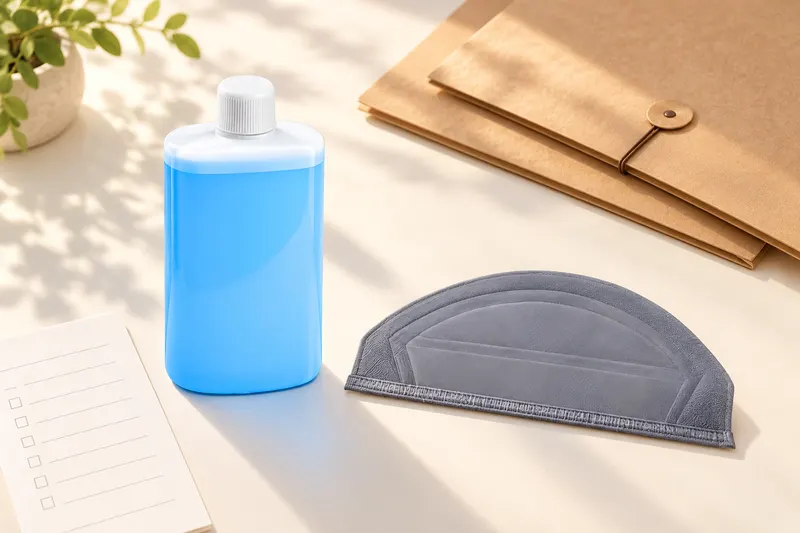

로보락 (Roborock)
로보락 S10 MaxV Ultra 전용 클리너는 기본 제공될까요? 본체 구매와 리필 구분
글·구성: 제이상점 · 기종별 소모품 규격 요약본 (상세 사진과 관리 전문은 아래 네이버 블로그 모바일 원문에서 확인하실 수 있습니다.)

핵심 관리 · 선택 체크포인트
- 판매자 안내｜제이상점이 제조사 공식 자료와 현재 자사 상품·옵션을 조사해 직접 작성했습니다.
- 로보락 S10 MaxV Ultra의 세제 카트리지가 내장되어 있다는 설명과 세정제 병이 구매 구성에 들어 있다는 설명은 서로 다릅니다.
- 현재 상품의 세제 병 형태와 물걸레 원본을 참고해 구매 자료를 나누어 보는 상황을 구성한 예시입니다.
- 로보락 한국 S10 MaxV Ultra FAQ Q2는 세정제가 별매라고 설명하고, Q6는 세정제 카트리지가 기기에 내장되어 있다고 설명합니다.
- 반대로 공식 FAQ의 일반 안내만으로 특정 판매처가 진행하는 사은품을 없다고 단정할 수도 없습니다.
부품 규격 · 점검 기준표
| 확인할 화면·자료 | 답을 찾을 질문 | 이것만으로 확정하지 않을 것 |
|---|---|---|
| 본체의 기능 설명 | 카트리지가 내장된 모델인가요? | 세정제 병의 동봉 여부 |
| 본체 구매 구성·행사 | 클리너가 포함되며 용량·개수가 적혔나요? | 다른 판매처도 같은 사은품인지 |
| 세정제 단품 페이지 | 선택 병 수·용량은 무엇인가요? | 내장 카트리지 장치를 새로 사는 것인지 |
| 소모품 세트 옵션 | 세제 포함·교체·미포함 중 무엇인가요? | 전체 부품이 정품으로 바뀌는지 |
| 현재 보유품 메모 | 추가로 필요한 것은 세제뿐인가요? | 새 본체나 큰 부품 세트가 필요한지 |
자주 묻는 질문 (FAQ)
Q. 로보락S10MaxVUltra의 본체의 기능 설명 규격과 관리 기준은 무엇인가요?
A. 카트리지가 내장된 모델인가요? 규격을 사용하며, 세정제 병의 동봉 여부 기준으로 점검·교체하면 청소 효율을 안정적으로 유지할 수 있습니다.
Q. 로보락S10MaxVUltra의 본체 구매 구성·행사 규격과 관리 기준은 무엇인가요?
A. 클리너가 포함되며 용량·개수가 적혔나요? 규격을 사용하며, 다른 판매처도 같은 사은품인지 기준으로 점검·교체하면 청소 효율을 안정적으로 유지할 수 있습니다.
Q. 로보락S10MaxVUltra의 세정제 단품 페이지 규격과 관리 기준은 무엇인가요?
A. 선택 병 수·용량은 무엇인가요? 규격을 사용하며, 내장 카트리지 장치를 새로 사는 것인지 기준으로 점검·교체하면 청소 효율을 안정적으로 유지할 수 있습니다.